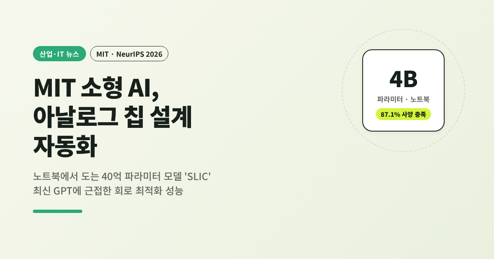
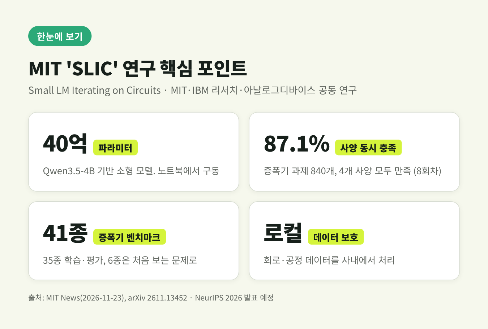
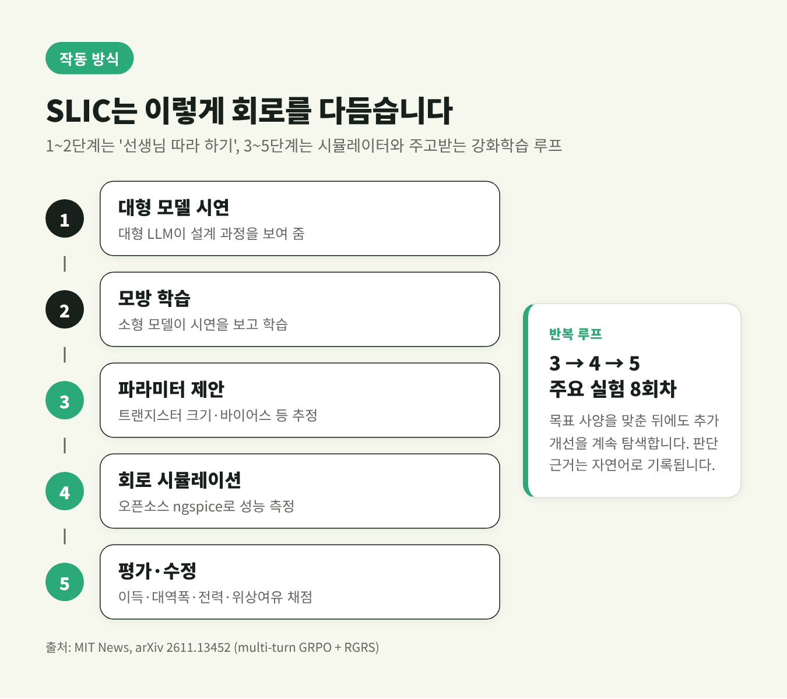
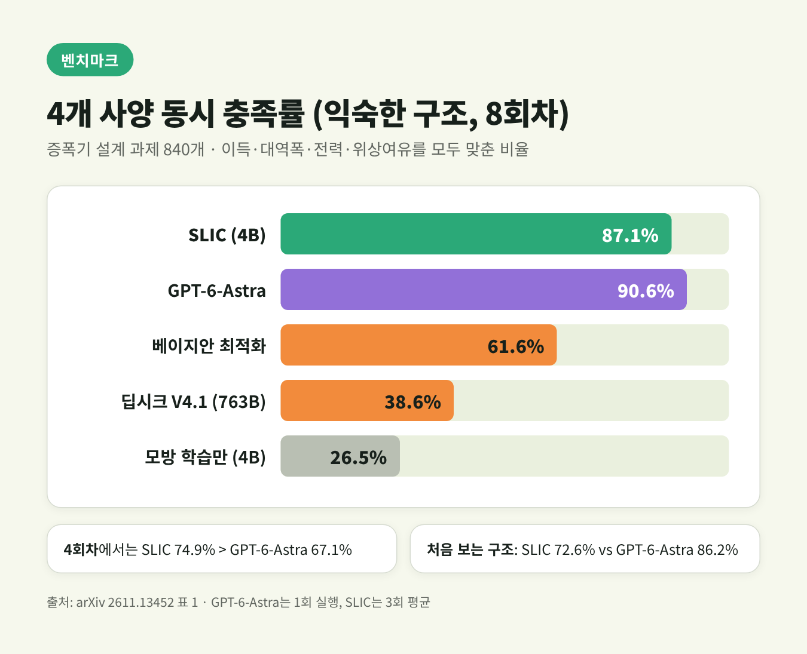
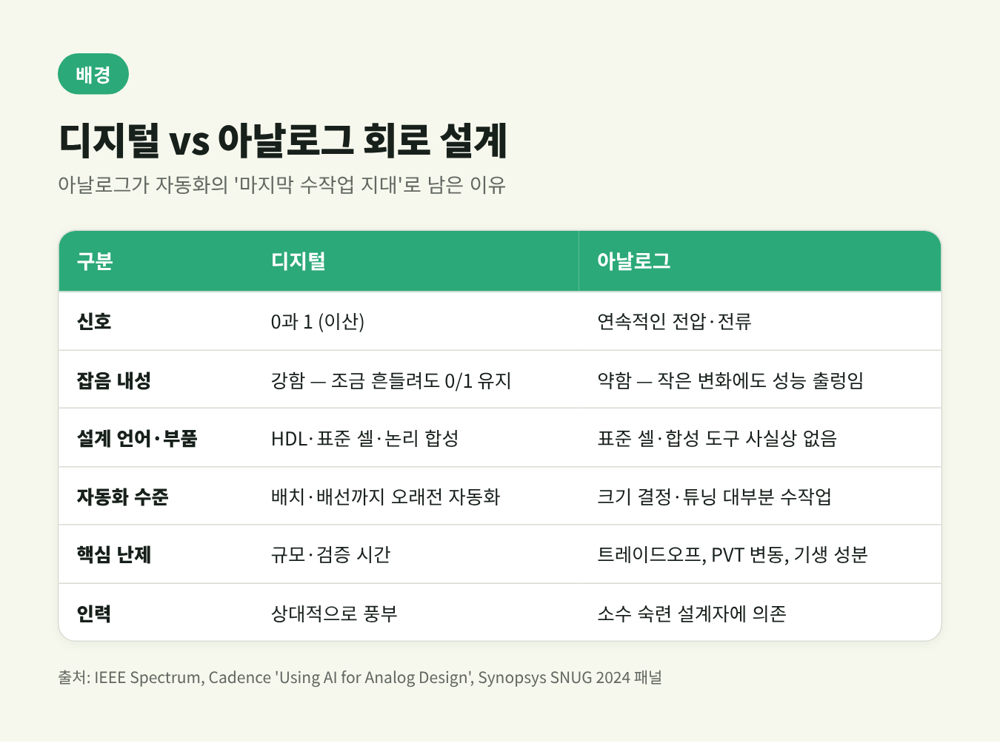
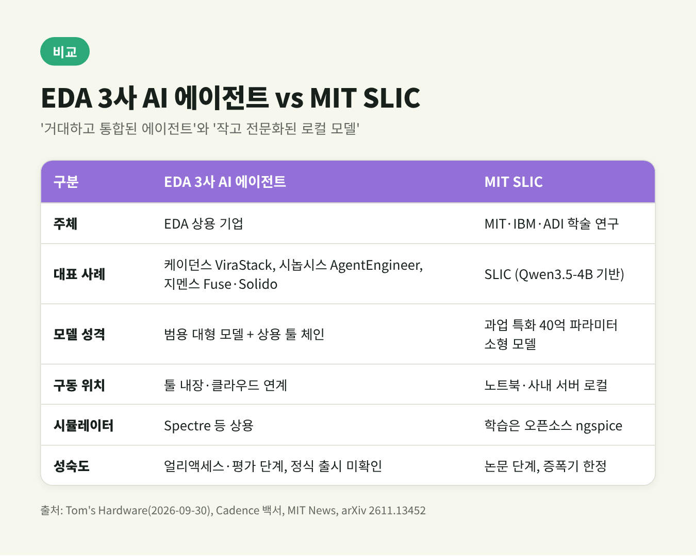
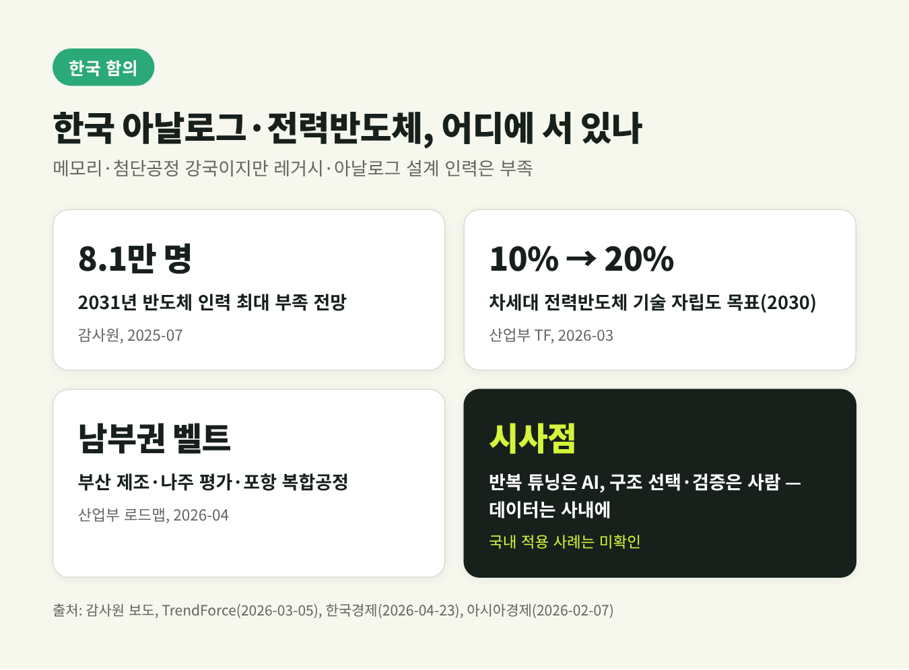

MIT 소형 AI, 아날로그 칩 설계 자동화…노트북 모델이 최신 GPT에 근접

이번 글에서는 MIT 연구진이 11월 23일 공개한 아날로그 칩 설계 AI 'SLIC'를 정리해 보겠습니다. 노트북에서 돌아가는 40억 파라미터 소형 모델이 회로 시뮬레이터와 대화하듯 설계를 고쳐 나가고, 증폭기 설계 시험에서 최신 대형 AI에 근접한 성적을 냈다는 내용입니다. 무엇이 새롭고, 왜 반도체 업계가 눈여겨볼 만하며, 어디까지가 아직 확인되지 않았는지를 차례로 짚어 봅니다.
세 줄 요약
- MIT·IBM 리서치·아날로그디바이스(ADI) 공동 연구진이 소형 언어모델로 아날로그 회로를 최적화하는 학습법 'SLIC'를 발표했습니다.
- 40억 파라미터 모델이 증폭기 설계 과제 840개에서 4개 사양을 모두 맞춘 비율 87.1%를 기록했습니다. 최신 GPT-6-Astra(90.6%)에 3.5%p 못 미쳤고, 7,630억 파라미터 오픈 모델(38.6%)은 크게 앞섰습니다.
- 회사의 회로 데이터를 외부 클라우드로 보내지 않고 사내에서 쓸 수 있다는 점이 핵심입니다. 다만 증폭기에 한정된 결과이고, 상용 공정에서는 성능이 눈에 띄게 떨어졌습니다.

■ 무슨 일이 있었나
MIT 뉴스는 11월 23일, 아날로그 집적회로 설계를 돕는 새 AI 학습 기법을 소개했습니다. 이름은 SLIC(Small LM Iterating on Circuits)이고, '슬릭'으로 읽습니다. 국내에서는 인공지능신문이 같은 날 저녁 이 소식을 전했습니다.
논문 제목은 「SLIC: 다회차 아날로그 회로 최적화를 위한 소형 언어모델 강화 미세조정」입니다. 11월 11일 아카이브(arXiv)에 먼저 올라왔고, 12월 열리는 인공지능 학회 NeurIPS 2026에서 발표될 예정입니다.
연구는 산학 합작입니다. MIT 전기전자컴퓨터공학과 대학원생 얀 쉬(Yan Xu)가 제1저자, 루오난 한(Ruonan Han) 교수가 책임 저자입니다. MIT 국제담당 부총장을 겸하는 듀안 보닝(Duane Boning) 교수도 참여했습니다. 아날로그 반도체 강자 ADI의 웬제 루(Wenjie Lu) 수석연구원, IBM 리서치의 신 장(Xin Zhang) 매니저도 이름을 올렸습니다. 연구비 일부는 ADI와 IBM, 그리고 MACOM의 기금에서 나왔습니다.
아날로그 칩을 실제로 만들어 파는 회사가 공동 연구자이자 후원자라는 점은 눈여겨볼 대목입니다. 학계의 아이디어 실험에 그치지 않고, 현장의 필요가 출발점이라는 뜻으로 읽힙니다.
■ 작은 모델이 회로를 설계하는 방식
아날로그 회로 설계의 상당 부분은 '조율'입니다. 트랜지스터 크기, 바이어스 전류, 저항·커패시터 값 같은 수많은 파라미터를 조금씩 바꿔 가며 원하는 성능을 맞춥니다. SLIC는 이 반복 작업을 AI에게 가르쳤습니다.
학습은 두 단계로 진행됩니다.
- 선생님 따라 하기 — 대형 모델이 설계 과정을 시연하고, 작은 모델이 이를 보고 배웁니다. 논문에 따르면 시연 데이터는 딥시크(DeepSeek)의 대형 모델이 시뮬레이터를 돌려 가며 만든 설계 기록입니다.
- 직접 부딪히며 익히기 — 작은 모델이 새 과제를 받아 파라미터를 추정하고, 회로 시뮬레이터를 돌리고, 결과를 읽고, 다시 고칩니다. 사양을 맞추면 점수를 받는 강화학습 방식입니다. 목표를 달성한 뒤에도 추가 개선을 계속 찾도록 설계됐습니다.

평가 기준은 증폭기의 핵심 사양 네 가지입니다. 이득(신호를 얼마나 키우는가), 대역폭, 소비 전력, 위상여유(회로가 흔들리지 않고 안정적인가)입니다. 네 가지를 동시에 맞춰야 '성공'으로 칩니다.
얀 쉬는 "사람이 회로 설계를 배우는 방식을 흉내 내려 했다"고 설명했습니다. 초보 설계자가 선배의 작업을 보고 배운 뒤, 시뮬레이션을 수없이 돌리며 감을 익히는 과정과 닮았습니다. 모델이 판단 근거를 자연어로 적어 내기 때문에, 엔지니어가 왜 그 값을 바꿨는지 따라가 볼 수 있다는 점도 장점으로 꼽힙니다.
기반 모델은 오픈소스 모델 큐웬(Qwen)3.5의 40억 파라미터 버전입니다. MIT는 수조 파라미터급 프런티어 모델보다 "수천 배 작다"고 설명했습니다. 학습에는 엔비디아 B200 GPU 두 장으로 약 39시간이 들었지만, 다 만든 모델은 노트북에서 돌릴 수 있습니다.
■ 성적표 — 어디까지 따라잡았나
연구진은 증폭기 회로 구조(토폴로지) 41종으로 시험 문제를 만들어 공개했습니다. 35종은 학습과 평가에, 6종은 학습에서 일부러 빼고 '처음 보는 문제'로 썼습니다. 평가 과제는 각각 840개, 240개입니다.
결과는 이렇습니다. 시뮬레이터와 8번 주고받는 동안 4개 사양을 모두 맞춘 비율입니다.
| 모델 | 익숙한 구조 | 처음 보는 구조 |
|---|---|---|
| SLIC (40억 파라미터) | 87.1% | 70.6~72.6% |
| GPT-6-Astra (최신 GPT, 클라우드) | 90.6% | 86.2% |
| 딥시크 V4.1-Flash (7,630억 파라미터) | 38.6% | 26.7% |
| 베이지안 최적화(기존 자동화 기법) | 61.6% | 31.8% |
| 큐웬3.5-4B 원본 | 한 자릿수 초반 | 4.4% |

숫자를 보면 세 가지가 읽힙니다.
첫째, 크기가 전부는 아니었습니다. 40억 파라미터 모델이 190배 넘게 큰 딥시크 모델을 48.5%p 차이로 앞섰습니다. 같은 모델이라도 모방 학습만 했을 때는 26.5%에 그쳤습니다. 시뮬레이터 피드백을 받는 강화학습이 성적을 끌어올린 셈입니다.
둘째, 최신 폐쇄형 모델과는 '근접'까지입니다. 4회차까지만 보면 SLIC가 74.9%로 GPT-6-Astra(67.1%)를 앞섰습니다. 그러나 8회차에서는 3.5%p, 처음 보는 구조에서는 13.6%p 뒤졌습니다. MIT도 "근접했다"고 표현했습니다.
셋째, 일반화는 절반의 성공입니다. 65나노 공정 모델로만 학습했는데도, 추가 학습 없이 22~130나노 다른 5개 공정에서 61.9~79.8%를 유지했습니다. 반면 실제 상용 공정인 TSMC 65나노 설계 키트(PDK)에서는 55.8%와 49.9%로 떨어졌습니다. 연구진은 학습에 쓴 공개용 예측 모델이 실제 공정의 효과를 다 담지 못하기 때문이라고 설명했습니다.
■ 왜 아날로그 설계는 여태 자동화가 어려웠나
디지털 칩은 0과 1의 세계입니다. 전압이 조금 흔들려도 0은 0, 1은 1로 읽히니 잡음에 강합니다. 여기에 표준 셀, 하드웨어 기술 언어, 논리 합성 도구가 갖춰져 설계의 상당 부분이 오래전부터 자동화됐습니다.
아날로그는 다릅니다. 트랜지스터를 완전히 켜거나 끄지 않고 그 중간에서 씁니다. 작은 변화에도 성능이 출렁입니다. 회로마다 손으로 크기를 정하고 다듬어야 했고, 디지털의 '합성'에 해당하는 도구도 없었습니다.

케이던스는 아날로그 설계가 늘 "소수의 노련한 설계자"에게 의존해 왔다고 짚습니다. 이득과 대역폭, 잡음과 전력, 안정성과 속도가 서로 발목을 잡습니다. 공정·전압·온도 변화, 소자 편차, 배선이 만드는 기생 성분까지 견뎌야 합니다.
경제성 문제도 있습니다. 2024년 시놉시스 사용자 행사 패널에서 한 엔지니어는 "누가 뭐라 해도 전부 수작업"이라고 말했습니다. 엔비디아 측 패널은 아날로그가 칩 면적에서 차지하는 비중이 작아 자동화 투자 대비 효과 계산이 "썩 좋았던 적이 없다"고 했습니다. 학습 데이터도 부족합니다. 분야가 좁고 보수적이라 공개 자료가 적습니다.
예전엔 "아날로그는 장인의 영역"이라는 말이 당연하게 받아들여졌습니다. 지금은 그 장인을 구하기 어렵다는 현실이 자동화를 재촉하고 있습니다. ADI의 웬제 루는 "아날로그 칩 수요는 늘고 있지만 설계 속도가 따라가지 못한다"고 말했습니다.
■ 시놉시스·케이던스의 '거대 에이전트'와 무엇이 다른가
반도체 설계 자동화(EDA) 업계도 올해 AI 에이전트 경쟁이 한창입니다. 톰스하드웨어의 9월 정리에 따르면 케이던스는 4월 아날로그·커스텀 설계용 'ViraStack'을 발표했고, 시놉시스는 'AgentEngineer' 7종을 연말 정식 출시 목표로 준비 중입니다. 지멘스도 자체 EDA AI 에이전트와 커스텀 IC 도구 솔리도(Solido)를 내세웁니다.
다만 이들이 내건 "최대 몇 배" 같은 수치는 대부분 업체·고객의 자체 보고입니다. 정식 출시가 확인된 에이전트는 아직 없다는 점도 함께 기억할 만합니다.

SLIC는 방향이 조금 다릅니다.
- 작고 전문화된 모델: 범용 거대 모델 대신 한 가지 과업에 특화한 40억 파라미터 모델을 씁니다.
- 로컬 구동: 노트북·사내 서버에서 돌아가니 회로 설계도와 파운드리 공정 데이터를 외부로 보낼 필요가 없습니다.
- 맞춤 학습: 공개된 모델을 자사 데이터로 추가 학습하거나, SLIC 학습 절차로 자체 모델을 만들 수 있다고 연구진은 설명합니다.
이 흐름은 소형 모델 시장 전망과도 맞물립니다. 가트너는 2028년까지 생성형 AI 작업의 30%가 사내나 기기 안에서 도는 분야 특화 소형 모델로 옮겨 갈 것으로 내다봤습니다. 2024년에는 1%도 안 됐던 비중입니다. 반도체처럼 설계 데이터가 곧 회사 자산인 업종에서는 이 장점이 더 크게 다가옵니다.
물론 SLIC는 상용 제품이 아니라 학술 연구입니다. EDA 대기업의 도구와 경쟁한다기보다, 그 안에 들어갈 수 있는 접근법 하나를 보여 준 것에 가깝습니다.
■ 한국 반도체에는 어떤 의미인가
한국 반도체는 메모리와 첨단 공정에 강합니다. 반대로 아날로그·전력반도체 같은 레거시 분야는 설계와 양산 역량이 약하다는 지적을 받아 왔습니다. 비메모리·레거시 분야를 맡을 연구자와 엔지니어가 부족하다는 비판도 꾸준합니다.
인력 수치는 더 무겁습니다. 감사원은 지난해 7월, 지금 정책대로라면 2031년까지 반도체 인력이 최대 8만1,000명 부족할 수 있다고 봤습니다. 한국반도체산업협회 기준으로는 설계를 포함한 전문 인력만 약 5만4,000명이 모자랄 것으로 전망됩니다. 아날로그 설계 인력만 따로 집계한 수치는 확인되지 않았습니다.
정부도 움직이고 있습니다. 차세대 전력반도체의 국내 기술 자립도는 약 10% 수준이고, 2030년 20%가 목표입니다. 산업부는 부산·나주·포항을 잇는 남부권 전력반도체 벨트를 추진하고, 올해부터 비수도권 5개 대학을 특성화대학원으로 지정하기로 했습니다.

이 지점에서 SLIC 같은 접근은 생각해 볼 거리를 줍니다. 숙련 설계자가 귀한 중소 팹리스라면 반복적인 회로 튜닝을 AI에 맡기고, 사람은 구조 선택과 최종 검증에 집중하는 분업을 상상해 볼 수 있습니다. 오픈소스 시뮬레이터와 공개 모델로 시작할 수 있다면 고가 도구와 대형 클라우드 AI 비용 부담도 줄어듭니다. 사내 데이터를 밖으로 내보내지 않아도 된다는 점은 보안에 민감한 국내 기업에 특히 의미가 있습니다.
다만 어디까지나 가능성입니다. 국내 기업이 이 기법을 적용한 사례나 효과는 아직 확인되지 않았습니다. AI가 신입 설계자의 '연습 문제'를 대신 풀어 버리면 장인을 길러 낼 기회가 오히려 줄어든다는 고민도 함께 따라올 수 있습니다.
■ 한계와 앞으로 볼 것
좋은 성적만큼 한계도 분명합니다.
- 범위가 좁습니다. 시험은 증폭기 41종에 한정됐습니다. 실제 칩에 들어가는 데이터 변환기(ADC), 위상고정루프(PLL), 전원관리 회로 같은 복잡한 블록은 검증되지 않았습니다.
- 상용 공정의 벽. TSMC 실제 공정 키트에서 성공률이 약 21~31%p 떨어졌습니다.
- 설계의 일부만 다룹니다. 회로 파라미터를 맞추는 단계가 대상이고, 레이아웃과 최종 검증(사인오프)은 여전히 사람과 기존 도구의 몫입니다.
- 비교 조건 차이. GPT-6-Astra의 8회차 결과는 1회 실행, SLIC는 3회 평균입니다.
- 효과 수치 미공개. 설계 기간이나 비용을 얼마나 줄이는지는 밝히지 않았습니다. 산업 현장 검증이 남아 있습니다.
연구진의 다음 계획은 두 갈래입니다. 더 다양한 회로 구조와 목표를 스스로 익히는 '자기 개선' 모델, 그리고 여러 소형 모델이 복잡한 설계의 부분을 나눠 맡는 멀티에이전트 체계입니다. IBM의 신 장은 무선(RF)·마이크로파 회로로의 확장 가능성도 언급했습니다.
12월 NeurIPS 발표 이후 모델이 실제로 공개되는지, 공개된다면 기업들이 상용 공정 데이터로 얼마나 성능을 끌어올리는지가 다음 관전 포인트입니다.
정리하면 이렇습니다. 이번 연구가 보여 준 것은 '더 큰 AI'가 아니라 '더 잘 배운 작은 AI'의 가능성입니다. 시뮬레이터라는 정직한 채점관과 수천 번 문답하며 익힌 40억 파라미터 모델이, 최신 거대 모델의 턱밑까지 따라붙었습니다.
"작게, 가까이, 반복해서" — 아날로그 설계 자동화의 오래된 숙제에 MIT가 내놓은 답안입니다.
이 답안이 실제 칩 위에서도 통할지 묻는다면, 아직은 지켜볼 때라고 답하겠습니다. 다만 그 질문을 진지하게 던질 만한 단계에 왔다는 것만큼은 분명해 보입니다.
참고자료
- MIT News — AI-driven technique could help engineers design analog chips faster and with less expense (2026-11-23)
- arXiv 2611.13452 — SLIC: Reinforcement Fine-Tuning Small LMs for Multi-Turn Analog Circuit Optimization (2026-11-11)
- 인공지능신문 — MIT SLIC 보도 (2026-11-23)
- Techgenyz — MIT SLIC: AI Analog Circuit Design With Smaller Models (2026-11-23)
- QUE.com — A 4-Billion-Parameter AI Just Beat a 763-Billion-Parameter Giant at Designing Analog Chips
- NeurIPS 2026 공식 일정
- Tom's Hardware — The state of agentic AI in chip design tools in 2026 (2026-09-30)
- Cadence — Using AI for Analog Design (백서)
- Synopsys — Why Analog Design Challenges Need Breakthrough Technologies (2024-04-30)
- IEEE Spectrum — Automation Comes to Analog (2001-06-01)
- arXiv 2508.10409 — AnalogSeeker (2025)
- FutureCIO — Growing the business with small language models (2026-05-10)
- 감사원 반도체 인력 전망 감사 보도 (2025-07-01)
- 전자신문 — 반도체 설계 인력 만성 부족 (2026-04-19)
- 아시아경제 — Legacy Semiconductors Poised for an Upturn... Korea Faces Entry Headwinds (2026-02-07)
- TrendForce — South Korea Steps Up Push for Next-Generation Power Semiconductors (2026-03-05)
- 한국경제 — 부산·나주·포항 남부권 전력반도체 벨트 (2026-04-23)